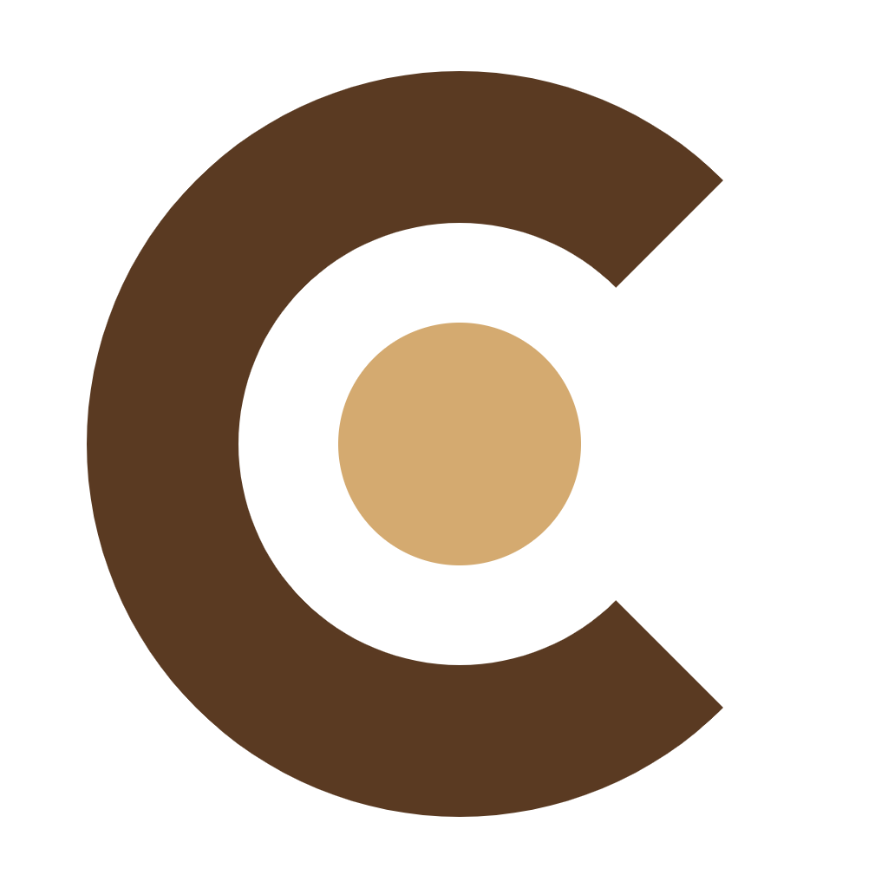
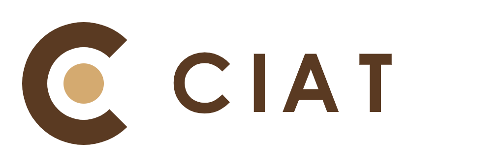
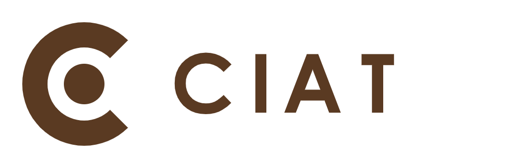
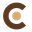

Le monogramme iconique géométrique à double couleur. Idéal pour avatars, icônes, applications et favicons.

Version principale d'en-tête de site web, papeterie, documents officiels et partenariats.

Version purement imprimable en une seule couleur (#5A3A22). Parfaite pour tampons, gravures, factures et impressions noir/blanc.

Formes vectorielles 100% blanches (#FFFFFF) sur fond transparent, pour utilisation sur slides sombres, textiles et mode nuit.
Le symbole conserve une clarté optique absolue à toutes les tailles, sans effritement ni perte de contraste :

32 px (Favicon)
32 px (Dark)